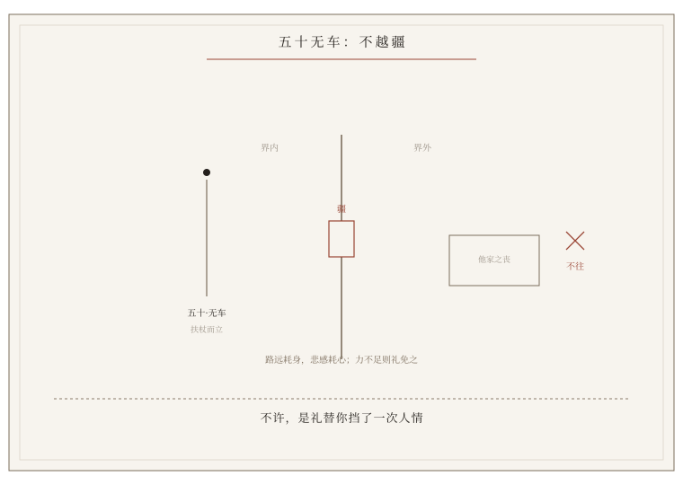

檀弓下 · 四·四 · 第 329 课
五十无车者，不越疆而吊人。
说什么事：五十以上而无车的人，不许越过疆界去吊人。
落在哪一层：以「力」量礼。论「礼替衰者免」。
为何编在此位：三百二十八课论「义夺情」，此课论「力夺情」。前一课是君断孝子，此课是礼断老者。
【经】五十無車者，不越疆而吊人。
【注】氣力始衰。
【疏】此一节论衰老不许徒行远吊之事。所以时不许越疆而吊人者，五十既衰，越疆则道路遥远，吊人又悲感哀戚，恐增衰恐，故不许也。
五十 五十岁。古以五十为始衰之年。
无车 没有车可乘。
越疆 越过疆界。疆，国界、疆域之界。
吊人 往吊他人之丧。
五十岁以上而没有车的人，不必越过疆界去吊人。
一句，注三字：「气力始衰。」
疏补两层理由：路远（体力），悲感（心力）。吊人一事，两样都耗；五十之人，两样都薄。
所以礼不许。这不是轻慢，是免。
第一层 礼不是按年，是按「有没有车」 经文的条件是「无车」，不是「五十」。若五十有车，则可越疆。
礼取可验者。年与力相关，车与力也相关；二者之中，车是可数、可验的，年只是可数。故礼以车为断。
今人立规，多按年龄划线；古人立规，多按「有无凭藉」划线。后者更近实情。
第二层 「疆」：可判的界 不许远行，不是一句空话；礼给它一条界——疆。越疆与不越疆，一望可判。
礼凡立禁，必附一条可判之界。无界之禁，必生争议；有界之禁，虽未必尽理，却可执行。
第三层 两层理由，一为身，一为心 疏「道路遥远」是身，「悲感哀戚」是心。吊人不是走一趟，是「再哀一次」。
礼在这里承认：哀是要耗人的。故不许衰者再去哀别人。这一条极有人情：不是不让你尽礼，是不忍你再耗。
第四层 「不许」的主语是礼，不是人 疏「时不许」，是礼不许。礼替衰者做了决定：不是你不能，是我不许你去。
这种「保护性的禁止」，今日少见而极有用：把「你可以不去」变成「你不许去」，则人不致自愧，家人不致相责。礼在这里替人挡了一次人情。
与今日何干 今人讲「孝心」「人情」，多不顾体力。此节给的线：力不足，礼替你免。免不是不孝，是礼知道人有限。
| 左 | 右 |
|---|---|
| 五十 | 始衰之年 |
| 无车 | 可验之凭 |
| 不越疆 | 力之界 |
| 吊人 | 再哀一次 |
| 路远 | 耗身 |
| 悲感 | 耗心 |
| 不许 | 礼免之，非人拒之 |
画一处野间，视点平视。画面中一道低矮的界石或土垄横贯，垄上立一块无字之石；石左一人扶杖而立（只画衣、杖、背影），面朝界外；界外远处一具素帷之车（他家之丧），淡而虚。不画人面、不写文字。赭色只用在界石一道边，与远处素帷的一道线。
